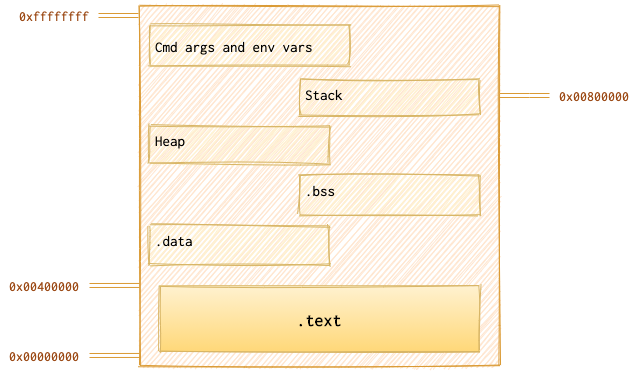
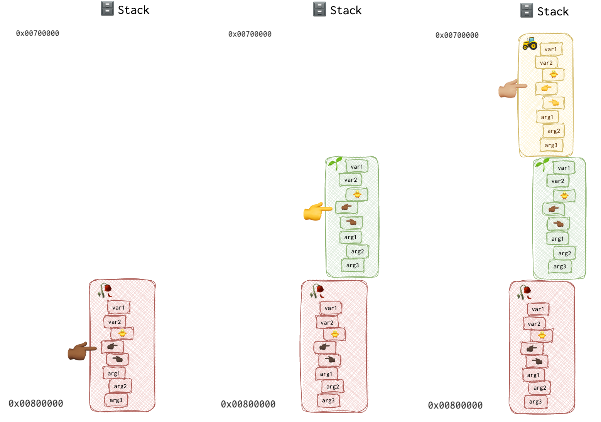
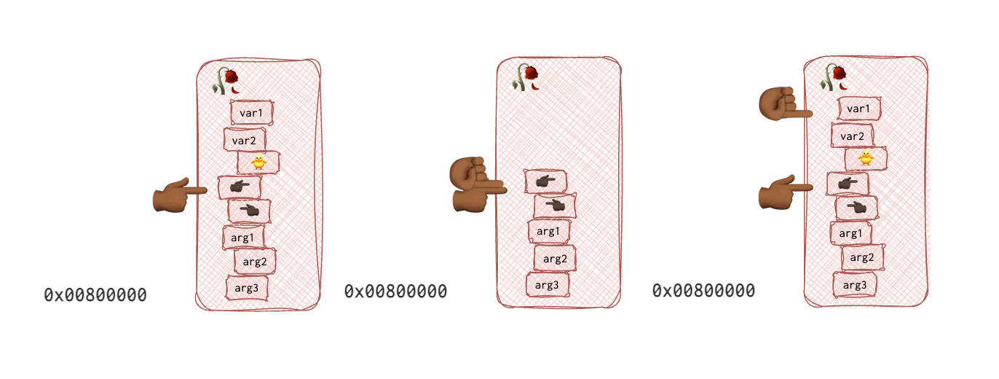
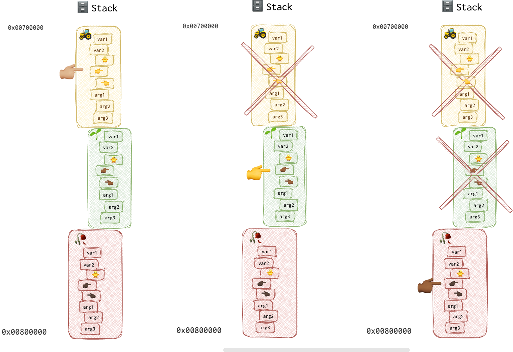
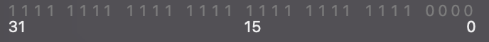

Intro
At the very beginning of my career I found it hard to grasp the notion of memory layout and stack. Even when I read about it several times, it didn’t feel solid. That’s why I drew drew and drew. Because my mind prefers pictures, analogies, metaphors and examples! So, I’ve made that. May be someone finds it useful.
Picture

Metaphor and Analogy
I was thinking about a good metaphor, but that was the extent of my imagination… Let’s say some weirdo (let’s call him Gargaralian) is piling up all the boring books he has 📚 under the table because the appartment is too small and the luxury of having a bookcase is not an option available for him. Besides, the table is a little loose, so that pile of books could be like the fifth leg. Something like that:
He is piling them up to reach the table top. He has limited space from the floor to the table top, around 4294967295 of hydroget atoms (he’s a weirdo, thus he counts table heights in atoms of hydrogen 🤓 ). For normal people, it’s about 43 centimetres (around 17 inches). With each book 📘 the distance to the table top is decreased ⬇️ . So, when he puts the first book, the distance becomes smaller - 39 cm. I think, you get the main idea. The same is with memory for each program: each one of them is given a limited space and it should decide wisely how to use it. Some programs might fail that task and have an overflow (when there are more books than the table height lets us pile), some underflow (when there are on the contrary not enough books and the table gets loose), but that’s whole another story.
We will go from the top to the bottom, from the highest address (0xffffffff) to the lowest (0x00000000). As an example, I’ll use ping program. So, we have 6 books…
Memory Segmentation
Cmd args and env vars
This is our first 📘, right on the floor. We are executing a program with some command line argument which now has the highest address in memory (around 0xffffffff):
ping ya.ru
This goes on the very bottom of the pile. There is pretty much of space left!
Stack
Grows towards lower memory addresses.
| buffer[] |
|---|
| flag (canary?) |
| SFP (EBP value of the caller) |
| ret |
| arg1 |
| arg2 |
| arg3 |
| arg4 |
To see the stack frame in gdb - x/16xw $esp.
int main() {
int stack_var = 4;
}
void function() {
int stack_var = 5;
}
Both main and function have a stack_var. They are not the same. They only share the name, but in fact these only exist while the function’s context exists. These are local variables.
Say, our custom ping program has a function dns_request. Let’s have a closer look:
main(int argc, char *argv[]) {
static int dns_request;
//make request
dns_request("ya.ru");
}
function bool dns_request (char domain_name[]) {
bool result;
struct dns_request;
dns_request.domain = domain_name;
...
for (int i = 1; i < 10; i++) {
somefunc(dns_request);
}
...
return result;
}
There is an interesting article about primary function.
What goes right on the stack? In general, everything that dies after function’s finished executing and before it returns. Specifically (from the snippet above):
- function arguments (
char domain_name[]) - Local variables (
bool result,int i)
Depending on archetecture and calling conventions, the code may differ a little, but I would like to show a snippet of C and the corresponding assembly below:
function void _func1(){
//assembly equivalent
//push 3
//push 2
//call _func2
_func2(2,3);
return 0;
}
function int _func2(int arg1, int arg2){
//function prologue (behind the curtain --> no equivalent in C)
//push ebp
//mov ebp, esp
//mov eax, [ebp + 8]
//mov edx, [ebp + 12]
//add eax, edx
int sum = arg1 + arg2;
//pop ebp
//ret
return sum;
}
What goes on the stack (in assembly)? Everything that was pushed (_func1: 3 and 2; _func2: ebp). So, in assembly, it’s obvious what goes on the stack.
Here is an interesting article about the different layers of memory of a C-program. The author, among other things, states that we cannot use local variables to return values because the stack is freed after program execution. But the thing (is far as I know) is that the return values are put into the eax register before returning, so they are not technically on the stack any more. Of course, if you use not the value from the returned function but an address of the local variable (which would be utterly weird), then yes, there is no guarantee it wasn’t overwritten.
What I’d also like to mention in the context of stack is that even though they say it’s freed, it’s not actually released per se. There is an esp register, which is very interesting.
Is underflow specific to stack?
Heap
Stack vs Heap article.
Doesn’t have a fixed size. The growth of the heap moves downward toward higher memory addresses. So, heap grows toward stack and stack - toward heap. One day when they meet (if they meet), you’ll deal with stack or heap overflow.
Variable need to be allocated first with a malloc() function. Pointers are usually used to reference heap variables.
int main() {
heap_var = (int *) malloc(4);
}
If it can’t allocate memory, it will return a NULL pointer (0x0). There once was a vulnerability in BootROM on iOS devices regarding this (Alloc8 exploit).
# Good code
void *pointer = malloc(size);
if (pointer == NULL) {
// handle error
} else {
// pointer is valid, continue
}
# Bad code in alloc8 vulnerable BootROM
void *pointer = malloc(size);
if (pointer == 0x8) {
// handle error
} else {
// pointer is valid, continue
}
For some reason, the return value was compared to 0x8, not NULL or even 0x0. Typo?
After the memory is no longer needed, you must call free() on this memory location. However, it will still be reused once the new malloc is called, even after freeing the memory space. It depends on the system, how the allocation functions are implemented, and the block size to allocate.
.BSS
int global_var;
int main() {
static int uninit_var;
// some code
}
This memory segment holds uninitialised global and static variables. Have a fixed size. Writable.
.Data
You can read about static variables, functions, classes and class members here.
This memory segment holds initialised global and static variables. Have a fixed size. Writable.
int global_var = 4;
int main() {
static int uninit_var = 5;
// some code
}
.Text
It contains the actual code of the program. It’s usually (and better be) read-only to prevent changes to the code. Also, different instances of the same process can share this memory portion.
Summary
Consider the following code:
void func 🚜 plough(){
# Plough the soil to plant the seed
}
void func 🌱 seed(int seed){
# Plant the seed
plough()
}
void func 🥀 grow_rose(int seed){
# grow and get a rose
seed(seed)
}
grow_rose(4)
To grow a rose 🥀, one must first plant and nurture a seedling 🌱. But before planting the seed, one must first plough 🚜 the soil. So, here are the steps: 🥀 get_rose <- 🌱 seed <- 🚜 plough.
In other words:
- 🚜
plough - 🌱
seed - 🥀
grow_rose
But what does it look like on the stack? Depending on the system, the stack grows up (towards the highest address) or down (towards the lowest address). Let’s assume we are dealing with a system where stack grows down. There are three important registers that hold the value that’s different for each function: ESP pointing to the top of the stack (aka stack pointer), EBP pointing to the start of a frame of a function (aka base pointer) and EIP pointing to the code currently being executed (aka function pointer).
Each function’s belongings on the stack are called a stack frame. Each function gets one. I don’t know about you, but I’ve watched my fair share of detective movies and series, and when they show someone getting arrested, they come to jail, register and leave all their belongings. They get them back when they are released. You might relate this to a stack: please save this and that until I return.
The EBP value is needed in order to “delete” the bunch of stuff stored on the stack for this particular function. They are not actually deleted, they will eventually get overwritten, but since EBP is no logner pointing there, and ESP is restored to the value of the EBP, they are not available for the code.
Here is a little picture of a stack, that shows how EBP can be moved up and down. Here is how the stack is built:

On the other hand, ESP is moving up and down WITHIN the given frame, with each addition or removal from the stack. EBP stays the same WITHIN the frame and changes only when the frame is changed. Since all local variables are added at the beginning of the function in assembly (regardless of where those were added in the source code), and CPU knows the number of those local variables, it can use EBP as a base and calcilate the address of each variable by adding multiples of 32-bits (8 bytes) to the EBP. It’s pretty much the same thing as with relative virtual addresses and image base described here.
Below is a picture of one frame to visualise the difference between EBP and ESP:

In the pictures above, fingers pointing to the right 👉🏾 are EBP pointers, palm-front ☝🏾 is ESP and 👈🏾 is a saved EIP (return address). Each function has a finger of different colour, making tracking the changes in the pictures easier. The 🥀 grow_rose’s base pointer is of the darker colour 👉🏾, and its EIP (function pointer) is of the same colour but pointing to the left 👈🏾. The 🌱seed function’s EBP 👉 and EIP 👈 are yellow. And last but not least, the 🚜 plough function’s EBP 👉🏼 and EIP 👈🏼 are both beige.
Now, when the 🚜 plough function returns, the CPU retrieves the 🌱seed function’s EBP 👉 from the 🚜 plough function’s stack frame so that now EBP points to the base of this stack frame, which is now 🌱seed function’s frame. It also returns the EIP value from the stack, knowing which line of code to execute next.

Just in case you are wondering, return values is stored in the
EAXregister, not on the stack.
Something similar happens to the EIP register.
void func 🚜 plough(){
👉🏼 # Plough the soil to plant the seed
}
void func 🌱 seed(int seed){
# Plant the seed
👉 plough()
}
void func 🥀 grow_rose(int seed){
# grow and get a rose
👉🏾 seed(seed)
}
grow_rose(4)
When the callee function returns, thanks to the saved EIP value on the stack, the CPU knows where to resume the code. Think of the EBP as a bookmark for stack and EIP - as a bookmark for code.
When a function is called, it prepares a nest 🪺 for itself, a cosy one (like a pregnant woman during the nesting period). It’s called a function prologue. After all the fun is over, the function “cleans the mess”, which we call the function epilogue.
push ebp <- function prologue for the main function
mov ebp,esp
sub esp,0x8
and esp, 0xfffffff0
mov eax,0x0
sub esp,eax
push 20
push 10
call Addme
...
push ebp # <- function prologue for the AddMe function
mov ebp,esp
sub esp,4
...
mov esp,ebp # <- function epilogue for the AddMe function, stack is cleaned, i.e. stackpointer is moved up
pop ebp # EBP restored
ret # EIP restored
A little note before we part, I remember being very confused about what were the following lines:
sub esp,0x8
and esp, 0xfffffff0
Let’s start with the first line, sub esp,0x8. Remember that the stack is growing towards the LOWEST address? So, the ESP pointer gets smaller each time the stack grows. When we ADD something to the stack, we need to SUBTRACT from the stack pointer. When we want to DELETE something, we ADD. A little confusing, I know. Remember, though, on some systems stack grows downwards!
If you see the source code for the assembly above, or if you prefer the hardcore way, you may notice that there are two local variables, integers 20 and 10. Integers on a 32-bit system are 4 bytes in size. So, two integers is 8 bytes. By substracting 8 from the ESP we are moving the stack pointer down towards the lowest address and thus preparing the nest🪺 for the two local variables.
The second line, and esp, 0xfffffff0 is for the alignment purposes as all addresses need to be aligned to 16-byte (in case of 32-bit systems at least) for some operations. The 0xfffffff0 mask used with AND operand clears the last bytes of the ESP. Here is what this mask looks like in binary:

As you can see, the last 4 bits are equal to 0. When 1 is ANDed with 0, you get 0. When something get’s ANDed with 1, it remains as it was. So, for the first 28 bits all 1s will remain 1s and all 0s will remain 0s. For the last 4 bits, regardless of the original value, all the 4 bits will be set to 0. Pretty much as if we were multiplying by 1 or 0, same effect here.
The following line mov eax,0x0, I assume, is for making sure that the EAX register is cleaned before used (it’s always used for the return value on Windows and some other systems). However, I don’t yet understand what that’s for: sub esp,eax.